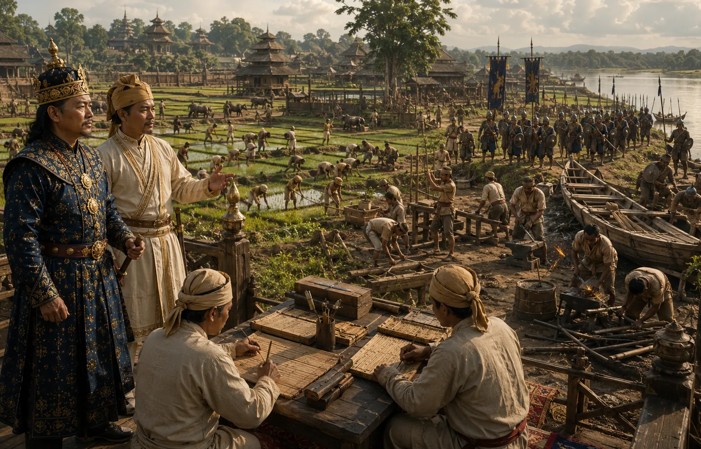

Reorganization of the Paik System by Momai Tamuli Barbarua
c. 1608–1615 · Against the Mughal Empire

Momai Tamuli reorganizes adult males into Paik squads (Gots of 3 or 4 men), mandatory rotation of state labor, and khel guilds, transforming Assam's agrarian and military mobilization.
Sources have not yet been catalogued for this record.